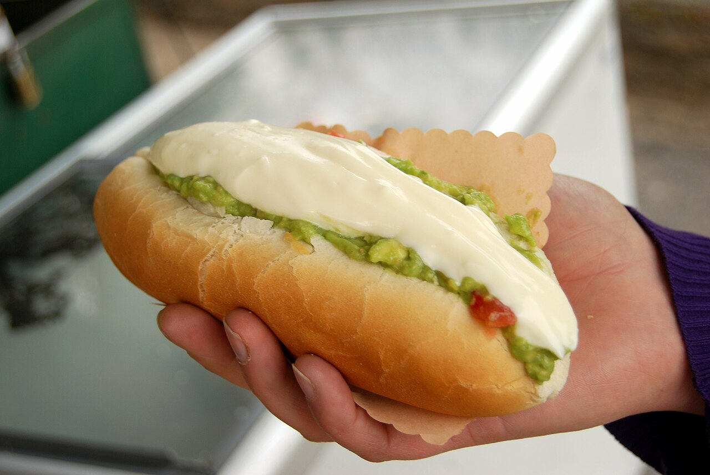

<ion-header>
  <ion-toolbar>
    <ion-buttons slot="end">
      <ion-back-button defaultHref="/home"></ion-back-button>
      <ion-menu-button></ion-menu-button>
    </ion-buttons>
    <ion-title>Inicio</ion-title>
  </ion-toolbar>
</ion-header>


<ion-content class="ion-padding">

  <!-- Foto y datos del usuario -->
  <div class="user-profile ion-text-center">
    <ion-avatar>
      
    </ion-avatar>
    <h2>Juan Pérez</h2>
    
  </div>

<ion-item-divider>
  <ion-label>Completos que he probado 🍽️</ion-label>
</ion-item-divider>

  <!-- Historial de lugares visitados -->
  <h3>Completos que he probado 🍽️</h3>
  <ion-list>
    <ion-card *ngFor="let local of historial">
      
      <ion-card-header>
        <ion-card-title>{{ local.nombre }}</ion-card-title>
        <ion-card-subtitle>Visitado el {{ local.fecha }}</ion-card-subtitle>
      </ion-card-header>
      <ion-card-content>
        <ion-chip color="success">
          <ion-icon name="star" color="light"></ion-icon>
          <ion-label>{{ local.puntaje }}/5</ion-label>
        </ion-chip>
      </ion-card-content>
    </ion-card>
  </ion-list>

</ion-content>
